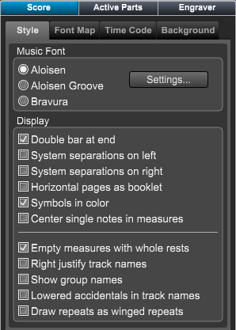

Score Panel - Style Section
Score Panel - Style Section
If the Score Layout panel is not showing click on the Layout button at top right of Control Bar or type "Shift-L" to open the panel.
Then choose the Score panel.
If necessary click on the Style tab to display the Style settings.

|
The music font
to use for this score
|
How to display the
score on the screen
|
Various global
score settings
|
Music Font
Choose the music fonts to be used in your score.
- Aloisen - Overture's standard music font.
- Aloisen Groove - Overture's hand written music font.
- Bravura - A new standard SmuFL font from Steinberg.
Click the Settings button to change the default fonts used in Overture.
Display
Choose several globals settings to be displayed in your score.
- Double Bar at End - If set, a a double bar is placed at the end of last measure.
- System Separations on left - If set, a system separation is drawn between system at the left.
- Systems Separations on right - If set, a system separation is drawn between system at the right.
- Horizontal pages as booklet - If set pages are displayed as if they are in a booklet with every other page together in the middle.
- Symbols in color - If set, symbols are drawn in the defined colors as set in the Preferences dialog.
- Center single notes in measures - If set, measures with only one note will have the note centered in the measure. This was an old style practice no longer used in today's music.
- Empty measures with whole rests - If set, measures containing no notes or rests will be filled with a whole rest
- Right justify track names - Is set track names will be right justified at the edge of each track, other wise they are centered.
- Lowered accidentals in track names - If set accidental baselines in track names will be slightly lower that the names base line.
- Draw repeats as winged repeats - If set, all repeats will have a winged top